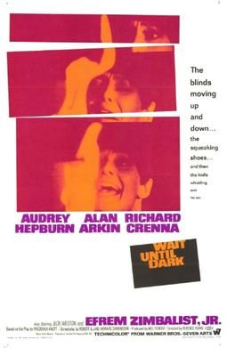
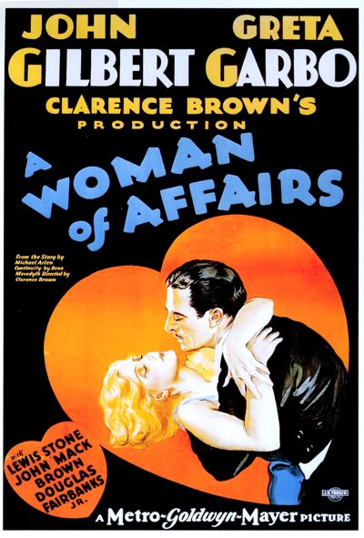

THE STANFORD THEATRE
Now Showing
·
Upcoming
·
Past
·
Search
August 6 - October 6, 2005
Summer 2005
29 bills
August 6 - 7
Laura (1944)
88 min
The Philadelphia Story (1940)
108 min
August 8 - 11
Laura (1944)
88 min
The Philadelphia Story (1940)
108 min
August 12
The African Queen (1951)
105 min
Beat the Devil (1953)
89 min
August 13 - 14
The African Queen (1951)
105 min
Beat the Devil (1953)
89 min
August 15 - 16
The African Queen (1951)
105 min
Beat the Devil (1953)
89 min
August 17 - 19
Charade (1963)
113 min

Wait Until Dark (1967)
107 min
August 20 - 21
Sunset Boulevard (1950)
110 min
Bride of Frankenstein (1935)
78 min
August 22 - 23
Sunset Boulevard (1950)
110 min
Bride of Frankenstein (1935)
78 min
August 24
Nosferatu (1922)
94 min
August 25 - 26
Employees' Entrance (1933)
75 min
Baby Face (1933)
70 min
August 27 - 28
All About Eve (1950)
138 min
Citizen Kane (1941)
119 min
August 29 - 30
All About Eve (1950)
138 min
Citizen Kane (1941)
119 min
August 31 - September 2
Genevieve (1953)
86 min
The Reluctant Debutante (1958)
94 min
September 3 - 4
The Big Sleep (1946)
114 min
Sabrina (1954)
113 min
September 5 - 6
The Big Sleep (1946)
114 min
Sabrina (1954)
113 min
September 7
Girl Shy (1924)
87 min
September 8 - 9
Mahanagar (1963)
128 min
Charulata (1964)
117 min
September 10 - 11
An Affair to Remember (1957)
119 min
Waterloo Bridge (1940)
108 min
September 12 - 13
An Affair to Remember (1957)
119 min
Waterloo Bridge (1940)
108 min
September 14 - 16
Grand Hotel (1932)
113 min
Anna Karenina (1935)
95 min
September 17 - 18
Ninotchka (1939)
110 min
Queen Christina (1933)
97 min
September 19 - 20
Ninotchka (1939)
110 min
Queen Christina (1933)
97 min
September 21

A Woman of Affairs (1928)
87 min
September 22 - 23
The Merry Widow (1934)
99 min
One Hour with You (1932)
82 min
September 24 - 25
To Be or Not to Be (1942)
93 min
Midnight (1939)
92 min
September 26 - 27
To Be or Not to Be (1942)
93 min
Midnight (1939)
92 min
September 28 - 30
Dinner at Eight (1933)
111 min
What Price Hollywood? (1932)
88 min
October 1 - 2
Some Like It Hot (1959)
120 min
It Should Happen to You (1954)
86 min
October 3 - 6
Some Like It Hot (1959)
120 min
It Should Happen to You (1954)
86 min
Archived
•
StanfordTheatre.org Original